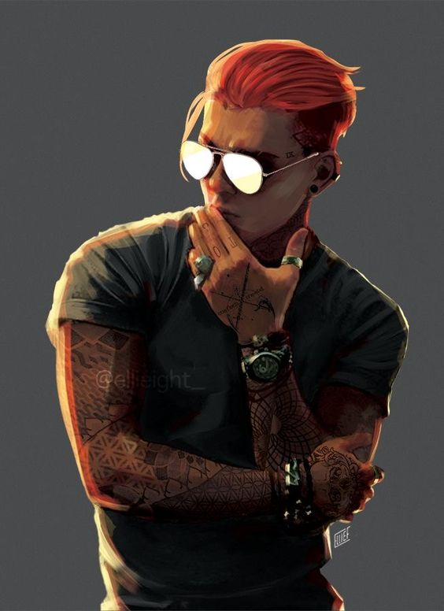
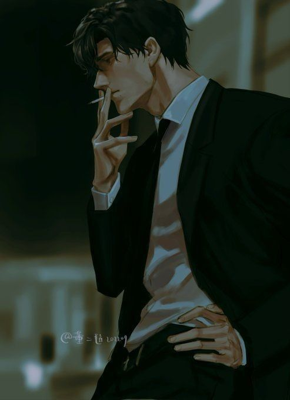
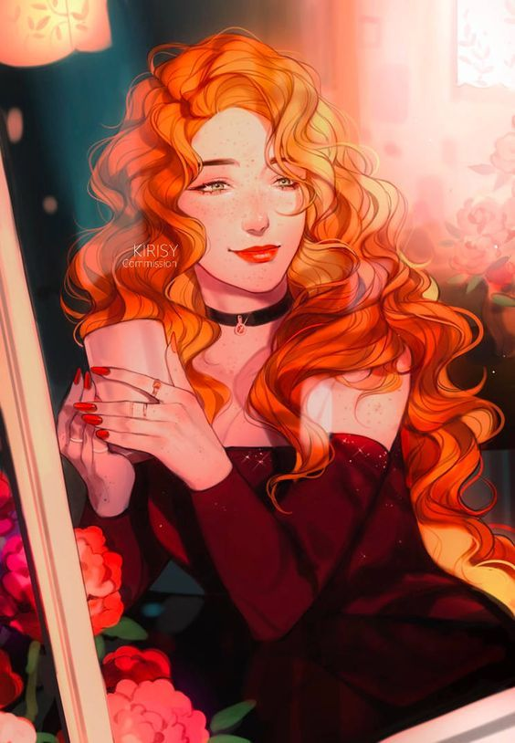
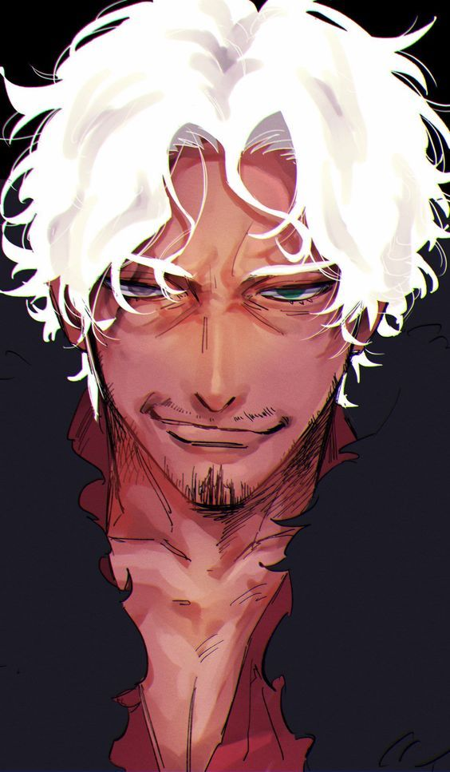

PembePanter
“Alay etmek için taktılar bu lakabı. Sonra tribünden tezahuratları susmadı.”
- Yaş
- 25
- Doğum yeri
- Neo-Nova
- Modifikasyon
- Yok
- Ringde
- 15–19 yaş
- İş
- Jhon'un Tavernası
- Durum
- Sürgün

%100 et ve kemikAltı raunt
-
10–15 yaş
Neo-Nova sokakları
Alt sınıf bir ailenin tek çocuğuOkulda kavgadan çıkmazdı. Yine de etrafı hep kalabalıktı; ağzı ne kadar bozuksa o kadar çok arkadaşı vardı. Robin'i sevmek kolaydı, onunla kavga etmek pahalı.
-
215–19 yaş
Modsuz ring
Yeraltı dövüşleri · implant yok, krom yok15 yaşında arkadaşları onu modifikasyonu olmayanların dövüştüğü salonlara götürdü. Herkesin koluna metal taktırdığı bir şehirde Robin çıplak yumrukla kazanmayı öğrendi. “Pembe Panter” burada doğdu.
-
319–22 yaş
Uzun Burun Billy
Bir turnuva · kafaları hemen uyuştuTurnuvada tanıştığı çocuk her seferinde kim olduğuna dair başka bir yalan anlatıyordu, lakabı da oradan geliyordu. Gerçek adı Laban'dı. Arkadaşlıkları kısa sürede fazlasına dönüştü.
Laban'ın yalanlarının bir sebebi vardı: "Antik Tanrılarla" konuştuklarına inanan küçük bir tarikatın üyesiydi. Tarikat üyeleri yalnızca birbirleriyle birlikte olabiliyordu. Bu yüzden ilişki üç yıl boyunca gizli kaldı.
Robin bu sürede ringi bıraktı ve bir atölyede düzenli bir işe girdi. Birisi için bir şeyleri bırakmayı ilk kez burada öğrendi.

Laban · Uzun Burun Billy -
4Laban 23
Düğün
Liderin kararı · itiraz hakkı yokKorkulan oldu. Tarikatın lideri Laban'ın Asiel ile evlenmesine karar verdi. Asiel 13 yaşında, dünyadan habersiz bir kızdı. Laban'a göre başka yol yoktu; karşı çıkarsa tarikat Robin'e de zarar verecekti.
Robin onu kaçırmak istedi ama cebindeki para ancak kendine yetiyordu. Laban evlense de ikili gizlice görüşmeye devam etti. Laban Asiel'e hiç dokunmadı.

Asiel -
5bir yıl sonra
Tuzak
Akrabalar · tarikatın kararıBir yıl sonra Asiel durumu ablalarından birine anlattı. Ablalar bir şeylerin döndüğünü hemen anladı ve ağabeyleri Hamath'a gitti. Hamath haftalarca Laban'ı takip etti ve her şeyi öğrendi.
Kardeşinin “namusunu temizlemek” ve tarikatın onurunu kurtarmak için liderden izin aldı. Laban'ı diğer müritlerle birlikte vahşice öldürdü. Cinayet en baştan Robin'in üstüne kalacak şekilde kurgulanmıştı.

Hamath · hedef -
6~1,5 yıldır
Writopia
Mahkeme · hüküm · sürgünMahkemenin gözünde Robin, sevgilisinin evlenmesini kıskanan metresti. Aşk cinayeti için sahne hazırdı. Robin asıl katilin Hamath olduğunu biliyordu; Laban ona, karısının ağabeyinin tuhaf davrandığını önceden söylemişti. Ne dediyse fark etmedi. Tarikat birbirinin arkasını kolladı.
Hüküm: suçlu · Writopia'ya sürgün
Robin nasıl biri
Önce yumruk, sonra soru
Okul bahçesinden yeraltı ringine kadar sorunları elleriyle çözdü. Hâlâ en rahat olduğu dil bu.
Herkesin arkadaşı
Kavgacı ama yalnız değil. İnsanlar ona yapışıyor. Şimdi Writopia'da bir tavernada çalışıyor, bir arkadaşının evinde kalıyor.
Ağzı bozuk, dili sivri
Ölümü bile espriyle karşılar. Neo-Nova'nın sokakları ona yas tutmayı değil, gülüp geçmeyi öğretti.
“Kamü öldü. Haha.”Sonuna kadar sadık
Üç yıl saklandı, ringi bıraktı, sevdiği adamın başkasıyla evlenmesine katlandı. Sevdiği biri için her şeye razı.
Bazı şeyleri görmez
Kavgada her hareketi okur, ama kendisine yönelik ilgiyi asla. Jhon'un kızı Medeline ona açıkça ilgi gösteriyor; Robin hâlâ fark etmedi.
Unutmaz
Sürgünde geçen bir buçuk yıl öfkesini söndürmedi, keskinleştirdi.
Yemin
“Laban'ın intikamını alacağım. Hepsinden.”
Hesabı kapanmayanlar
- HamathLaban'ı öldürdü
- Tarikatın lideriİzni o verdi
- MüritlerCinayete ortak, mahkemede yalancı
Aranıyor
Robin Writopia'daki bir buçuk yılını plana yardım edecek insanları arayarak geçirdi. Kime güvenip kime güvenmediğini kendi notlarından okuyabilirsin.
Tanıdıklar →